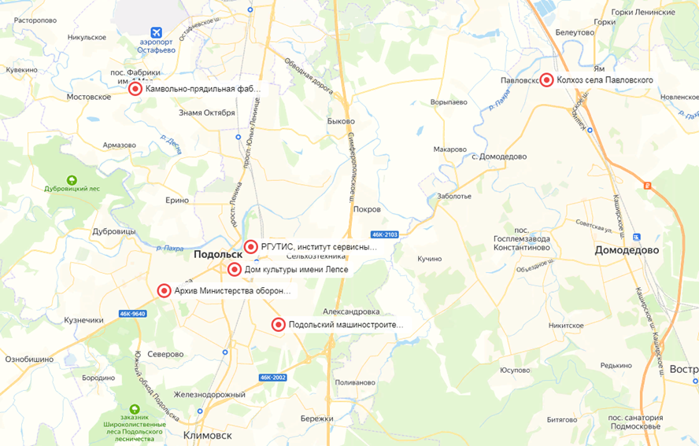

Фронтовой поезд Победы
Ссылка на интерактивную карту...
Точки туристического маршрута «Поезд Победы»
1. Описание проекта
Подмосковный Подольск входит в комплекс мемориальных сооружений Рубеж славы, так как во время Великой Отечественной войны здесь шли ожесточенные бои с фашистами. В городе свято чтят память погибших во время Великой Отечественной войны.
Поэтому, туристический маршрут «Поезд Победы» предоставляет возможность изучить историю города Подольск во время Великой Отечественной войны.
Для освещения трудовых подвигов тружеников тыла, предприятий оборонной отрасли, внесших значительный вклад в достижение победы над врагом, была предложена новая автобусная экскурсия «Поезд Победы».
Уникальность
Подмосковный Подольск обладает большим потенциалом для развития внутреннего туризма. В городе много исторических и архитектурных памятников, здесь проходят событийные и массовые мероприятия, масштабные спортивные соревнования.
Для жителей г.о. Подольск, которые в силу разных причин могут не знать о достопримечательностях и истории своего региона, запуск туристического маршрута «Поезд Победы» будет интересен, а узнав о богатом разнообразии туристских возможностей города, они захотят узнать больше, что поведет за собой развитие внутреннего туризма в г.о. Подольск. Для гостей города это будет полезной находкой.
Целевая аудитория
Туристический маршрут рассчитан на школьников, студентов и взрослых, любителей экскурсий, краеведения, и всех интересующихся историческим прошлым наших героических предков.
Описание точек маршрута
Данный маршрут будет составлять шестичасовую автобусную экскурсию.

Рисунок 1. Географическое положение точек туристического маршрута «Поезд Победы»Все точки представленные в рисунке 1 подбирались на основе того, что каждая выбранная точка по-своему уникальна и отличается от других.
Ниже в таблице можно увидеть программу экскурсии и время посещения объектов.
Таблица 1. Точки туристического маршрута «Поезд Победы»
| Время | Наименование | Описание объекта |
| 10:00 | Сбор туристов на станции Подольск | Начало экскурсии |
| 10:20 | Подольский машиностроительный завод имени Орджоникидзе (ЗиО) | Подольский машиностроительный завод имени Орджоникидзе (ЗиО) во время войны полностью перестроил свои мощности на производство оборонной продукции. На заводе делали бронированные корпуса для танков, а также для известного во всем мире штурмовика ИЛ-2. Коллективом ЗиО был построен бронепоезд для Красной Армии – «Подольский рабочий». |
| 11:10 | Дом культуры имени Лепсе | В доме культуры имени Лепсе в военные годы был открыт госпиталь. В него привозили раненых защитников Москвы, в том числе курсантов подольских военных училищ. |
| 12:10 | Центральный архив Министерства обороны РФ | Центральный архив Министерства обороны РФ. В период Великой Отечественной войны 1941-1945 гг. сотрудниками центрального архива Министерства обороны РФ была проделана огромная и трудоемкая работа по приему на хранение архивных документов от войск действующей армии. |
| 13:20 | Подольское пехотное училище | Из курсантов Подольского пехотного и артиллерийского училищ был сформирован сводный полк, которому был отдан приказ – занять оборону на Ильинском рубеже, недостроенном Малоярославецком укрепрайоне и любой ценой задержать противника на 5-7 дней, до подхода резервов. От передового отряда осталось не более трети курсантов. Судьба большинства погибших курсантов сводного полка останется неизвестной. |
| 14:10 | Камвольно-прядильная фабрика имени 1 мая | Текстильная промышленность Подольского района в годы Великой Отечественной войны перестроила свою работу на выпуск пряжи для изготовления шинелей и трикотажа на нужды фронта. Многие рабочие и служащие фабрики активно и геройски участвовали в кровопролитных и ожесточенных боях под Москвой, на Курской дуге; освобождали Украину, Белоруссию. |
| 15:40 | Колхоз села Павловского | Свой вклад в общее дело победы над врагом внесли, и труженики сельского хозяйства Подольского района. Одним из передовых в Подольском районе в годы Великой Отечественной войны был колхоз села Павловского. За высокие показатели в растениеводстве колхоз получил переходящее Красное знамя РК В?П (б) и исполкома райсовета депутатов трудящихся. |
| 16:40 | Прибытие на станцию Подольск | Окончание экскурсии |
Советы туристам
Для того, чтобы узнать еще больше истории города во времена Великой Отечественной Войны, советуем также посетить мемориальный музей-заповедник «Подолье» в городе Подольск.
Полезные материалы для сайта
- Подольский машиностроительный завод имени Орджоникидзе (ЗиО)

- Дом культуры имени Лепсе

- Центральный архив Министерства обороны РФ

- Подольское пехотное училище

- Камвольно-прядильная фабрика имени 1 мая

- Колхоз села Павловского